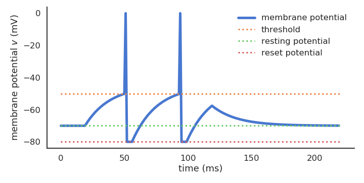
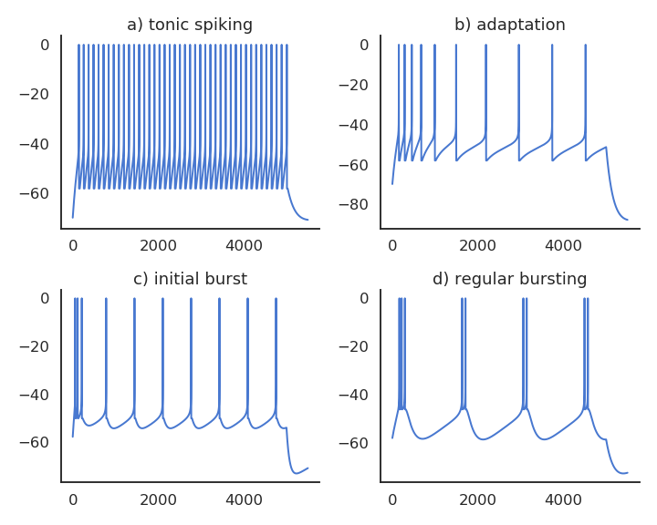
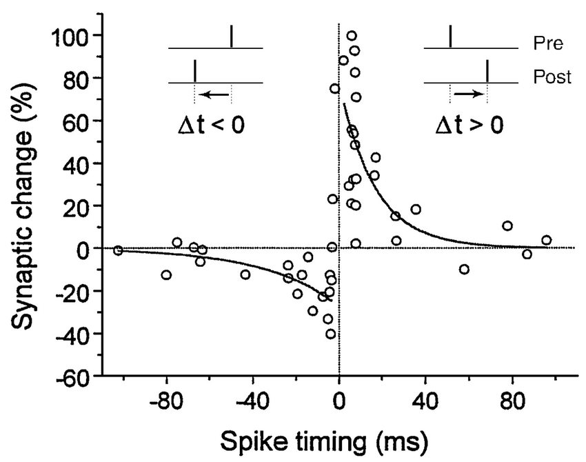

Neurocomputational modeling
Computational neuroscience is about explaining brain functioning at various levels (neural activity patterns, behavior, etc.) using biologically realistic neuro-computational models. Different types of neural and synaptic mathematical models are used in the field, abstracting biological complexity at different levels. There is no “right” level of biological plausibility for a model - you can always add more details -, but you have to find a paradigm that allows you to:
- Explain the current experimental data.
- Make predictions that can be useful to experimentalists.

Neuron models
Rate-coded neurons only represent the instantaneous firing rate of a neuron:
\tau \, \frac{d v(t)}{dt} + v(t) = \sum_{i=1}^d w_{i, j} \, r_i(t) + b r(t) = f(v(t))

Spiking neurons emit binary spikes when their membrane potential exceeds a threshold. Some examples:
- Leaky integrate-and-fire (LIF):
C \, \frac{d v(t)}{dt} = - g_L \, (v(t) - V_L) + I(t) \text{if} \; v(t) > V_T \; \text{emit a spike and reset.}

- Izhikevich quadratic IF (Izhikevich, 2003):
\begin{cases} \displaystyle\frac{dv}{dt} = 0.04 \, v^2 + 5 \, v + 140 - u + I \\ \\ \displaystyle\frac{du}{dt} = a \, (b \, v - u) \\ \end{cases}
- Adaptive exponential IF (AdEx, Brette and Gerstner, 2005).
\begin{cases} \begin{aligned} C \, \frac{dv}{dt} = -g_L \ (v - E_L) + & g_L \, \Delta_T \, \exp(\frac{v - v_T}{\Delta_T}) \\ & + I - w \end{aligned}\\ \\ \tau_w \, \displaystyle\frac{dw}{dt} = a \, (v - E_L) - w\\ \end{cases}

Biological neurons do not all respond the same to an input current: Some fire regularly, some slow down with time., some emit bursts of spikes… Modern spiking neuron models allow to recreate these dynamics by changing just a few parameters.

Recurrent neural networks (e.g. randomly connected populations of neurons) can exhibit very rich dynamics even in the absence of inputs:
- Oscillations at the population level.
- Excitatory/inhibitory balance.
- Spatio-temporal separation of inputs (reservoir computing).


Synaptic plasticity
Hebbian plasticity
Hebbian learning postulates that synapses strengthen based on the correlation between the activity of the pre- and post-synaptic neurons:
When an axon of cell A is near enough to excite a cell B and repeatedly or persistently takes part in firing it, some growth process or metabolic change takes place in one or both cells such that A’s efficiency, as one of the cells firing B, is increased.
Donald Hebb, 1949
In Hebbian learning, the weights increase proportionally to the the product of the pre- and post-synaptic firing rates:
\frac{dw}{dt} = \eta \, r^\text{pre} \, r^\text{post}
The BCM (Bienenstock et al., 1982; Intrator and Cooper, 1992) plasticity rule allows LTP and LTD depending on the post-synaptic plasticity:
\frac{dw}{dt} = \eta \, r^\text{pre} \, r^\text{post} \, (r^\text{post} - \mathbb{E}((r^\text{post})^2))
The Covariance learning rule (Dayan and Abbott, 2001) compares the post-synaptic firing rate to a threshold:
\frac{dw}{dt} = \eta \, r^\text{pre} \, (r^\text{post} - \mathbb{E}(r^\text{post}))
The Oja learning rule (Oja, 1982) allows to limit infinite weight growth:
\frac{dw}{dt}= \eta \, r^\text{pre} \, r^\text{post} - \alpha \, (r^\text{post})^2 \, w
With rate-ocded networks, you can use virtually anything virtually any learning rule depending only on the pre- and post-synaptic firing rates, e.g. in Vitay and Hamker (2010):
\begin{aligned} \frac{dw}{dt} & = \eta \, ( \text{DA}(t) - \overline{\text{DA}}) \, (r^\text{post} - \mathbb{E}(r^\text{post}) )^+ \, (r^\text{pre} - \mathbb{E}(r^\text{pre}))- \alpha(t) \, ((r^\text{post} - \mathbb{E}(r^\text{post} )^+ )^2 \, w \end{aligned}
STDP: Spike-timing dependent plasticity
Synaptic efficiencies actually evolve depending on the the causation between the neuron’s firing patterns:
- If the pre-synaptic neuron fires before the post-synaptic one, the weight is increased (long-term potentiation). Pre causes Post to fire.
- If it fires after, the weight is decreased (long-term depression). Pre does not cause Post to fire.
The STDP (spike-timing dependent plasticity, Bi and Poo, 2001) plasticity rule describes how the weight of a synapse evolves when the pre-synaptic neuron fires at t_\text{pre} and the post-synaptic one fires at t_\text{post}.
\frac{dw}{dt} = \begin{cases} A^+ \, \exp - \frac{t_\text{pre} - t_\text{post}}{\tau^+} \; \text{if} \; t_\text{post} > t_\text{pre}\\ \\ A^- \, \exp - \frac{t_\text{pre} - t_\text{post}}{\tau^-} \; \text{if} \; t_\text{pre} > t_\text{post}\\ \end{cases}
STDP can be implemented online using traces. More complex variants of STDP (triplet STDP) exist, but this is the main model of synaptic plasticity in spiking networks.

Neuro-computational models
Populations of neurons can be combined in functional neuro-computational models learning to solve various tasks. They require to implement one (or more) equations per neuron and synapse (thousands of neurons, millions of synapses..).
Here are some recent examples for our lab: